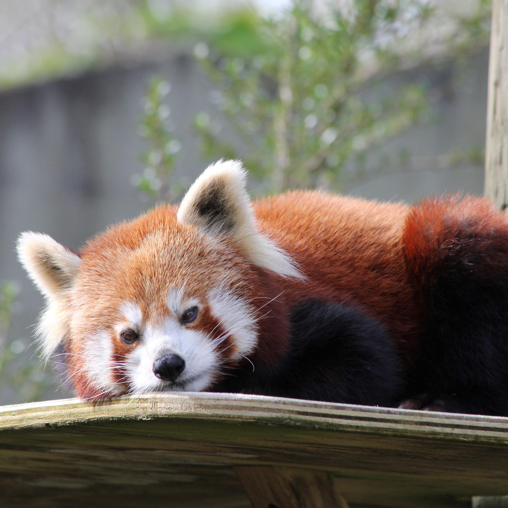
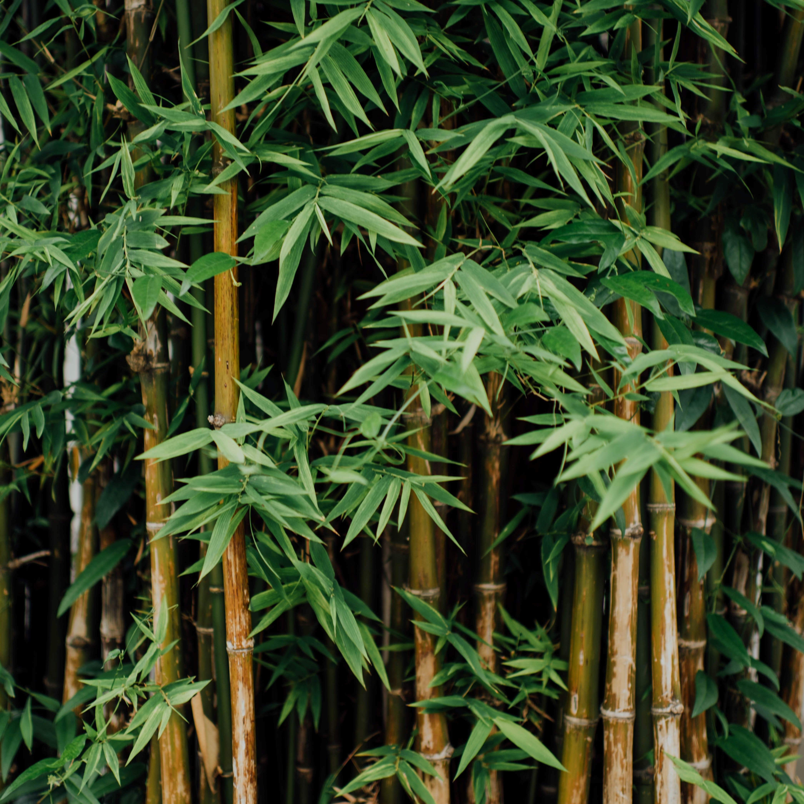

There are only 2 different species of pandas in the world. The more famous giant panda has distinctive black and white markings and is actually a species of bear. The second type of panda is a red panda, as the name suggests they are reddish-brown in colour. They are much smaller than giant pandas but they have a very similar diet.

Panda's eat a staggering 23-40 kg of bamboo every single day, this is because bamboo contains little nutritional value. There are many different types of bamboo that Panda's enjoy eating including; black bamboo, arrow bamboo and water bamboo. They prefer to eat bamboo shoots but these are only available in Spring and Summer. Pandas will also eat fruits, vegetables, fungus and even small mammals. Baby pandas will drink their mother's milk until they are around 6 months old and then they will begin to eat Bamboo along with the adult pandas.

Pandas once lived throughout Myanmar and Northern Vietnam as well as Southern and Eastern China. Today most of the wild pandas live in the forests of the Qinling and Minshan mountains in China.